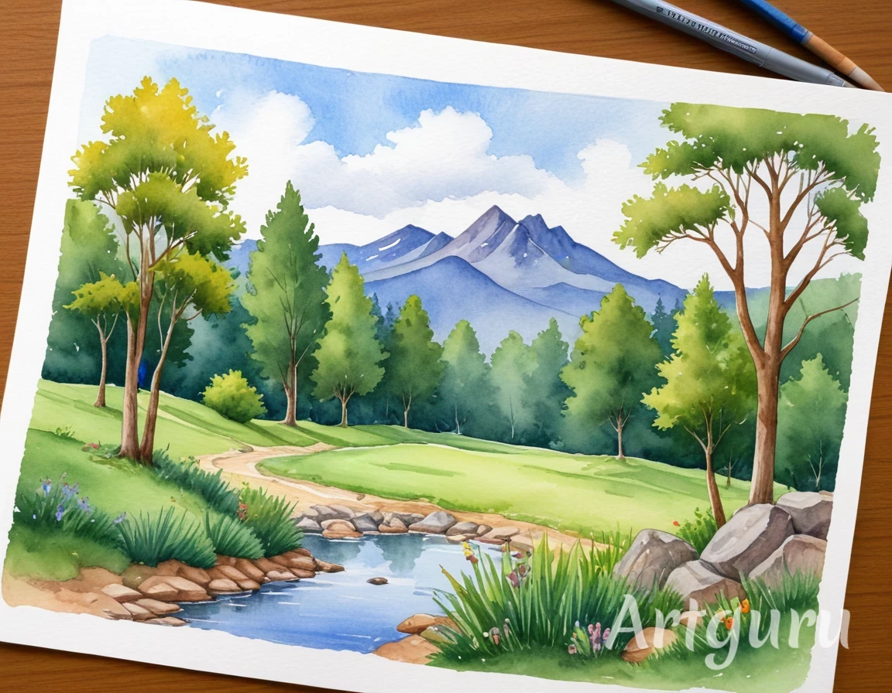
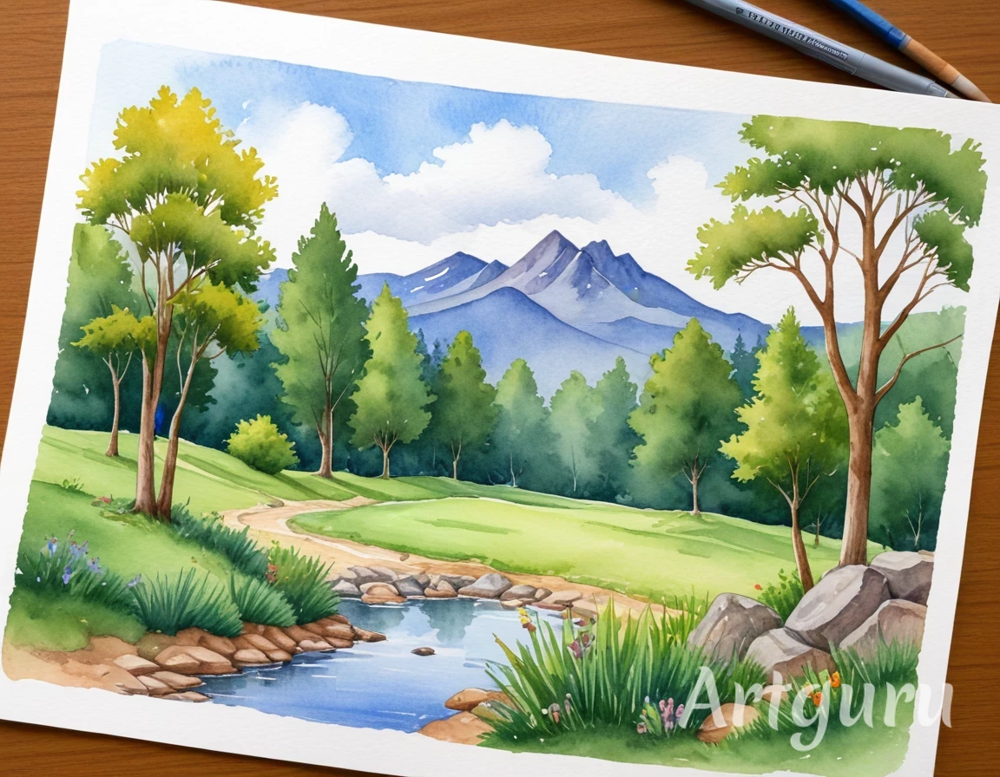

Como a IA está Moldando a Arte
A IA tem sido usada para criar imagens e pinturas, desafiando a noção tradicional de "autor" e "originalidade". Algoritmos como as Redes Neurais Generativas Adversariais (GANs) são capazes de gerar obras de arte que imitam estilos clássicos ou até criam novos estilos visuais. Um exemplo notável é a obra "Edmond de Belamy", gerada por uma IA e vendida por uma quantia significativa em leilão, levantando questões sobre o valor da arte criada por máquinas.
Benefícios da Integração da IA na Arte
A integração da IA na arte traz vários benefícios:
- Democratização da criação artística, permitindo que pessoas, independentemente de suas habilidades técnicas, possam produzir obras.
- Aceleração do processo criativo, ajudando na geração de esboços e storyboards, proporcionando mais tempo para o refinamento das obras.
- Impulso de inovações artísticas, apresentando novas formas e técnicas que enriquecem o campo da arte.
- Preservação e restauração de arte, com museus empregando tecnologias de IA para restaurar obras danificadas e garantir a longevidade de peças históricas.
Malefícios da Integração da IA na Arte
Apesar dos benefícios, a IA na arte também apresenta alguns malefícios:
- Impacto negativo na profissão de artistas, com a automação podendo diminuir a demanda por trabalhos artísticos manuais.
- Questões de originalidade e propriedade intelectual, pois as obras criadas por IA levantam dúvidas sobre quem realmente detém os direitos autorais.
- Uso indevido da IA, como na criação de deepfakes e outras formas de arte digital manipuladora, levantando preocupações éticas e de segurança.
- Desvalorização da arte humana, com o mercado se saturando de obras geradas por algoritmos, diluindo o valor da arte feita por artistas tradicionais.
concluimos que:
A integração da IA na arte abre novas possibilidades criativas, mas também apresenta desafios éticos e profissionais. O futuro da arte com IA dependerá de como esses benefícios e malefícios serão equilibrados e regulamentados.
Exemplos de Arte feitas com IA imitando tecnicas

 

.png)